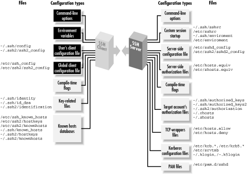

|  |
Chapter 7. Advanced Client Use
Contents:
How to Configure ClientsPrecedence
Introduction to Verbose Mode
Client Configuration in Depth
Secure Copy with scp
Summary

Figure 7-1. Client configuration (highlighted parts)
7.1. How to Configure Clients
The clients ssh and scp are quite configurable, with many settings that can be changed to suit your whim. If you want to modify the behavior of these clients, three general techniques are at your disposal:- Environment variables
- For minor changes to the behavior of scp
- Command-line options
- For changing the behavior of ssh or scp for a single invocation
- Configuration keywords
- For changes that remain in force until you change them again; these are stored in a client configuration file
7.1.1. Environment Variables
Several client features are controlled by environment variables. For example, scp prints statistics about each file it transfers if the environment variable SSH_ALL_SCP_STATS is set. Environment variables may be set in your current shell by the standard methods:Alternatively, environment variables and values may be specified in a file. System administrators can set environment variables for all users in /etc/environment, and users can set them in ~/.ssh/environment (SSH1, OpenSSH) and ~/.ssh2/environment (SSH2). These files contain lines of the format:# C shell family (csh, tcsh) $ setenv SSH_ALL_SCP_STATS 1 # Bourne shell family (sh, ksh, bash) $ SSH_ALL_SCP_STATS=1 $ export SSH_ALL_SCP_STATS
where NAME is the name of an environment variable, and VALUE is its value. The value is taken literally, read from the equals sign to the end of the line. Don't enclose the value in quotes, even if it contains whitespace, unless you want the quotes to be part of the value.NAME=VALUE
7.1.2. Command-Line Options
Command-line options let you change a client's behavior just once at invocation. For example, if you're using ssh1 over a slow modem connection, you can tell SSH1 to compress the data with the -C command-line option:ssh, scp, and most of their support programs, when invoked with the -h option, print a help message listing all of their command-line options. For example:$ ssh1 -C server.example.com
# SSH1, SSH2 $ ssh -h $ ssh-keygen2 -h
7.1.3. Client Configuration Files
If you don't want to retype command-line options continually, configuration files let you change a client's behavior now and in the future, until you change the configuration file again. For example, you can enable compression for all clients you invoke by inserting this line into a client configuration file:In a client configuration file, client settings are changed by specifying 276 keywords and values. In the example, the keyword is Compression and the value is yes. In SSH1 and OpenSSH, you may optionally separate the keyword and value with an equals sign:Compression yes
SSH2 doesn't support this syntax, however, so it can be easier always to use the "keyword <space> value" format to avoid confusion. You may configure clients to behave differently for each remote host you visit. This can be done on the fly with command-line options, but for anything reasonably complex, you'll end up typing long, inconvenient command lines like:Compression = yes
Alternatively, you can set these options within a configuration file. The following entry duplicates the function of the command-line options above, collecting them under the name "myserver":$ ssh1 -a -p 220 -c blowfish -l sally -i myself server.example.com
To run a client with these options enabled, simply type:# SSH1, OpenSSH Host myserver ForwardAgent no Port 220 Cipher blowfish User sally IdentityFile myself HostName server.example.com
Configuration files take some time to set up, but in the long run they are significant timesavers. We've given you a peek at the structure of a configuration file: a Host specification, followed by a bunch of keyword/value pairs. In the coming sections, we continue this philosophy, defining the structure and general rules before explaining the meanings of keywords. Once the generalities are covered, we'll dive into specific keywords. Sound good? Let's go.$ ssh1 myserver
7.1.3.1. Keywords versus command-line options
As we cover the many configuration keywords, note that all can be supplied on the command line if desired. The -o command-line option exists for this purpose. For any configuration line of the form:you may type:[89]Keyword Value
[89]Again, SSH1 and OpenSSH allow use of the equals sign (=) between the keyword and value, which allows you to omit the quotes on the command line: ssh -o Keyword=Value.
For example, the configuration lines:# SSH1, SSH2, OpenSSH $ ssh -o "Keyword Value" ...
can be specified as:User sally Port 220
SSH1 additionally permits an equals sign between the keyword and the value:# SSH1, SSH2, OpenSSH $ ssh -o "User sally" -o "Port 220" server.example.com
This example shows that the -o option may be specified multiple times on the command line. The option also works for scp in SSH1 and OpenSSH:$ ssh1 -o User=sally -o Port=220 server.example.com
Another relationship between command-line options and configuration keywords is found in the -F option (SSH2 only). This option instructs an SSH2 client to use a different configuration file instead of ~/.ssh2/ssh2_config. For example:# SSH1, OpenSSH $ scp -o "User sally" -o "Port 220" myfile server.example.com:
Unfortunately there's no equivalent option for SSH1 or OpenSSH clients.$ ssh2 -F ~/.ssh2/other_config
7.1.3.2. Global and local files
Client configuration files come in two flavors. A single, global client configuration file, usually created by a system administrator, governs client behavior for an entire computer. The file is traditionally /etc/ssh_config (SSH1, OpenSSH) or /etc/ssh2/ssh2_config (SSH2). (Don't confuse these with the server configuration files in the same directories.) Each user may also create a local client configuration file within his or her account, usually ~/.ssh/config (SSH1, OpenSSH) or ~/.ssh2/ssh2_config (SSH2). This file controls the behavior of clients run in the user's login session.[90][90]The system administrator may change the locations of client configuration files, using the compile-time flag --with-etcdir Section 4.1.5.1, "Configuration standards" or the serverwide keyword UserConfigDirectory. [Section 5.4.1.5, "User SSH directory"] If the files aren't in their default locations on your computer, contact your system administrator.Values in a user's local file take precedence over those in the global file. For instance, if the global file turns on data compression, and your local file turns it off, the local file wins for clients run in your account. We cover precedence in more detail soon. [Section 7.2, "Precedence"]
7.1.3.3. Configuration file sections
Client configuration files are divided into sections. Each section contains settings for one remote host or for a set of related remote hosts, such as all hosts in a given domain. The beginning of a section is marked differently in different SSH implementations. For SSH1 and OpenSSH, the keyword Host begins a new section, followed by a string called a host specification. The string may be a hostname:an IP address:Host server.example.com
a nickname for a host: [Section 7.1.3.5, "Making nicknames for hosts"]Host 123.61.4.10
or a wildcard pattern representing a set of hosts, where ? matches any single character and * any sequence of characters (just like filename wildcards in your favorite Unix shell):Host my-nickname
Some further examples of wildcards:Host *.example.com Host 128.220.19.*
For SSH2, a new section is marked by a host specification string followed by a colon. The string, like the argument of Host, may be a computer name:Host *.edu Any hostname in the edu domain Host a* Any hostname whose name begins with "a" Host *1* Any hostname (or IP address!) with 1 in it Host * Any hostname or IP address
an IP address:server.example.com:
a nickname:123.61.4.10:
or a wildcard pattern:my-nickname:
Following the host-specification line are one or more settings, i.e., configuration keywords and values, as in the example we saw earlier. The following table contrasts SSH1 and SSH2 configuration files:*.example.com: 128.220.19.*:
| SSH1, OpenSSH | SSH2 |
|---|---|
Host myserver User sally IdentityFile myself ForwardAgent no Port 220 Cipher blowfish |
myserver: User sally IdentityFile myself ForwardAgent no Port 220 Ciphers blowfish |
The settings apply to the hosts named in the host specification. The section ends at the next host specification or the end of the file, whichever comes first.
7.1.3.4. Multiple matches
Because wildcards are permitted in host specifications, a single hostname might match two or more sections in the configuration file. For example, if one section begins:[91][91]We use only the SSH1 file syntax here to keep things tidy, but the explanation is true of SSH2 as well.
and another begins:Host *.edu
and you connect to server.harvard.edu, which section applies? Believe it or not, they both do. Every matching section applies, and if a keyword is set more than once with different values, the earliest value takes precedence. Suppose your client configuration file contains two sections to control data compression, password authentication, and password prompting:Host *.harvard.edu
and you connect to server.harvard.edu:Host *.edu Compression yes PasswordAuthentication yes Host *.harvard.edu Compression no PasswordPromptLogin no
Notice that the string server.harvard.edu matches both Host patterns, *.edu and *.harvard.edu. As we've said, the keywords in both sections apply to your connection. Therefore, the previous ssh command sets values for keywords Compression, PasswordAuthentication, and PasswordPromptLogin. But notice, in the example, that the two sections set different values for Compression. What happens? The rule is that the first value prevails, in this case, yes. So in the previous example, the values used for server.harvard.edu are:$ ssh server.harvard.edu
and as shown in Figure 7-2. Compression no is ignored because it is the second Compression line encountered. Likewise, if 10 different Host lines match server.harvard.edu, all 10 of those sections apply, and if a particular keyword is set multiple times, only the first value is used.Compression yes The first of the Compression lines PasswordAuthentication yes Unique to first section PasswordPromptLogin no Unique to second section
Figure 7-2. SSH1 client configuration file with multiple matches (SSH2 not shown)
While this feature might seem confusing, it has useful properties. Suppose you want some settings applied to all remote hosts. Simply create a section beginning with:and place the common settings within it. This section should be either the first or the last in the file. If first, its settings take precedence over any others. This can be used to guard against your own errors. For example, if you want to make sure you never, ever, accidentally configure SSH sessions to fall back to the insecure rsh protocol, at the beginning of your configuration file put:Host *
Alternatively, if you place Host * as the last section in the configuration file, its settings are used only if no other section overrides them. This is useful for changing SSH's default behavior, while still permitting overrides. For example, by default, data compression is disabled. You can make it enabled by default by ending your configuration file with:# First section of file Host * FallBackToRsh no
Voilá, you have changed the default behavior of ssh and scp for your account! Any other section, earlier in the configuration file, can override this default simply by setting Compression to no.# Last section of file Host * Compression yes
7.1.3.5. Making nicknames for hosts
Suppose your client configuration file contains a section for the remote host myserver.example.com :One day, while logged onto ourclient.example.com, you decide to establish an SSH connection to myserver.example.com. Since both computers are in the same domain, example.com, you can omit the domain name on the command line and simply type:Host myserver.example.com ...
This does establish the SSH connection, but you run into an unexpected nuance of configuration files. ssh compares the command-line string "myserver" to the Host string "myserver.example.com", determines that they don't match, and doesn't apply the section of the configuration file. Yes, the software requires an exact textual match between the hostnames on the command line and in the configuration file. You can get around this limitation by declaring myserver to be a nickname for myserver.example.com. In SSH1 and OpenSSH, this is done with the Host and HostName keywords. Simply use Host with the nickname and HostName with the fully qualified hostname:$ ssh myserver
ssh will now recognize that this section applies to your command ssh myserver. You may define any nickname you like for a given computer, even if it isn't related to the original hostname:# SSH1, OpenSSH Host myserver HostName myserver.example.com ...
Then you can use the nickname on the command line:# SSH1, OpenSSH Host simple HostName myserver.example.com ...
For SSH2, the syntax is different but the effect is the same. Use the nickname in the host specification, and provide the full name to the Host keyword:$ ssh1 simple
Then type:# SSH2 only simple: Host myserver.example.com ...
Nicknames are convenient for testing new client settings. Suppose you have an SSH1 configuration for server.example.com:$ ssh2 simple
and you want to experiment with different settings. You can just modify the settings in place, but if they don't work, you have to waste time changing them back. The following steps demonstrate a more convenient way:Host server.example.com ...
- Within the configuration file, make a copy of the section you want to
change:
# Original Host server.example.com ... # Copy for testing Host server.example.com ...
- In the copy, change "Host" to "HostName":
# Original Host server.example.com ... # Copy for testing HostName server.example.com ...
- Add a new Host line at the beginning of the copy,
using a phony name, for example, "Host my-test":
# Original Host server.example.com ... # Copy for testing Host my-test HostName server.example.com ...
- Setup is done. In the copy (my-test), make all the changes you want and connect using ssh my-test. You can conveniently compare the old and new behavior by running ssh server.example.com versus ssh my-test. If you decide against the changes, simply delete the my-test section. If you like the changes, copy them to the original section (or delete the original and keep the copy).
# Original server.example.com: ... # Copy for testing my-test: Host server.example.com ...
7.1.3.6. Comments, indenting, and style
You probably noticed in the previous examples that we are using the # symbol to represent comments:In fact, any line beginning with # in the configuration file is treated as a comment and ignored. Likewise, blank lines (empty or containing only whitespace) are also ignored. You might also have noticed that the lines following a host specification are indented:# This is a comment
Indenting is considered good style because it visually indicates the beginning of a new section. It isn't required, but we recommend it.# SSH1, OpenSSH Host server.example.com Keyword1 value1 Keyword2 value2 # SSH2 only server.example.com: Keyword1 value1 Keyword2 value2
|  | |
| 6.5. Summary |  | 7.2. Precedence |